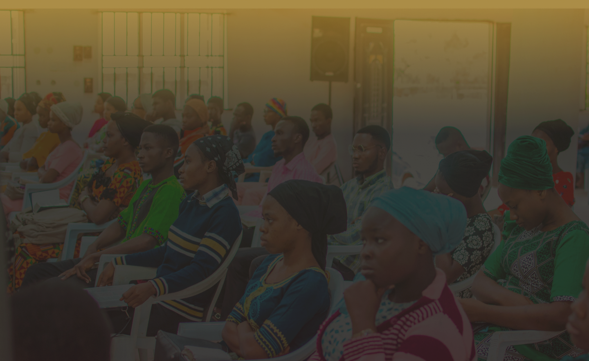
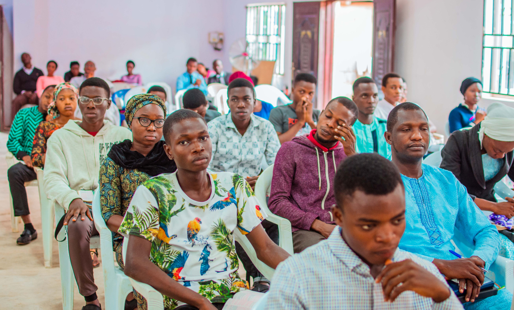

DEEPER LIFE CAMPUS FELLOWSHIP, MAPOLY CHAPTER.
Moshood Abiola Polytechnic,
located in Ojere, Abeokuta, is a renowned institution of higher learning in Nigeria. Named after the late philanthropist and democratic icon, Chief Moshood Kashimawo Olawale Abiola, the polytechnic offers a diverse range of academic programs and technical courses.Deeper Life Campus Fellowship, MAPOLY Chapter,
is a vibrant religious organization on the campus of Moshood Abiola Polytechnic, guided by the motto "raising saintly intellectuals," the fellowship aims to nurture spiritual growth and academic excellence among its members. Through various activities, events, and mentorship, they create a supportive community that fosters Intellectual and moral development, preparing students to be well-rounded individuals who positively impact society.

